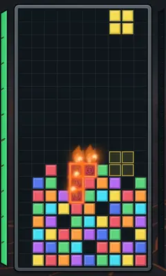
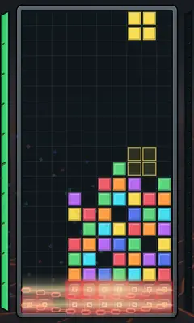

Spoilers: this page gives away the end of the Red Desert Story.
Ward and Brand
Ward and Brand is step 2 of Hell's Bargain, given by  Brann.
Brann.
Objective
Hold the Ward Sigil or clear a Brand of Sin.
Lock a piece right into his sigil, or clear both branded rows at once. Either will do. Three times.Brann
Requirements
- Turn in On Demand first.
- It can be worked on before level 55, and is turned in at it.
Rewards
 Gold Coin ×3,000
Gold Coin ×3,000 Respec Shard
Respec Shard
3,790 experience.
Walkthrough
- Find The Unbound:
- Hellish Desert, in the Red Desert Story (fight 1 of the road)
- the Endless Dungeon's Hellish Desert: a round boss; the warden its chest follows


Wait for The Unbound's Ward Sigil or The Unbound's Brand Of Sin. Lights an outline on your stack in the shape of a piece you have coming. Lock that piece into it within 8 seconds to stun him and land your next hit twice. Miss it and he strikes three times as hard. Raises two rows with a key's shape cut through both. Clear both rows with one piece to land your next hit twice. Left, they harden into brimstone.- Do it 3 times in all: Hold the Unbound's Ward Sigil or clear his Brand of Sin, 3 times. Every answer counts, in any mode, over as many fights as it takes.
- Turn it in to Brann on the QUESTS screen.
Tips
- Either answer counts. Ward Sigil: it outlines a piece you have coming; lock that piece into the outline inside 8 seconds. Watch your NEXT queue for it.
- Brand of Sin: two rows rise with a key's shape cut through both. Clear both with one piece.
Changes
Not written yet
What changed in this quest, update by update.
| Hell's Bargain | |
|---|---|
| Steps | On Demand · Ward and Brand · No Hell-Iron |
| Next | No Hell-Iron |